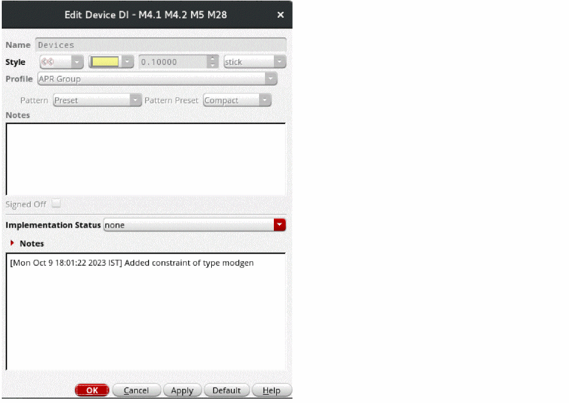

Generating Constraints for Design Intent Device Groups
The Auto P&R assistant honors the device groups defined in Virtuoso Design Intent in the schematic view. This flow involves interaction between Virtuoso Design Intent contained in Virtuoso Schematic XL and the automated device placement and routing flow contained in Virtuoso Layout XL.
- Select the required devices in the design canvas or Navigator assistant either in Schematic XL or Layout XL.
-
In Schematic XL, right-click and choose Design Intent – Create Design Intent – Devices. The Create Device DI form appears.
- Specify a design intent name in the Name field.
- Select a design intent annotation style from the Style drop-down list.
- Select the annotation color, font size, and font from the corresponding drop-downs.
- Set Profile to APR Group.
- Select a device pattern from the Pattern drop-down. The available options are:
- Click OK to create the Design Intent.
Design intent annotations are displayed in the design canvas to indicate the devices for which design intent is defined.
The Auto P&R assistant honors the Design Intent and creates a corresponding constraint as part of the Constraints step.
To generate the required constraints in the Auto P&R assistant:
- Launch the Auto P&R assistant.
- Generate devices in the layout canvas using options on the Initialize tab of the Auto P&R assistant.
- On the Constraints tab, ensure that the APR Device Group from DI finder is selected to recognize Design Intent device groups.
- Click Find Structures. The Design Intent device groups are identified and listed under the finder.
-
Click Create Constraints to create a constraint for each Design Intent device group.
The constraint is listed in the Constraints Manager.
Editing a Design Intent
You can edit a design intent using the
- Right-click the constraint that contains the required design intent.
-
Choose Edit DI from the shortcut menu to display the Edit Design Intent form.

Use the options in the Edit Design Intent form to update the design intent.
Related Topics
Generating Constraints and Constraint Groups
Return to top